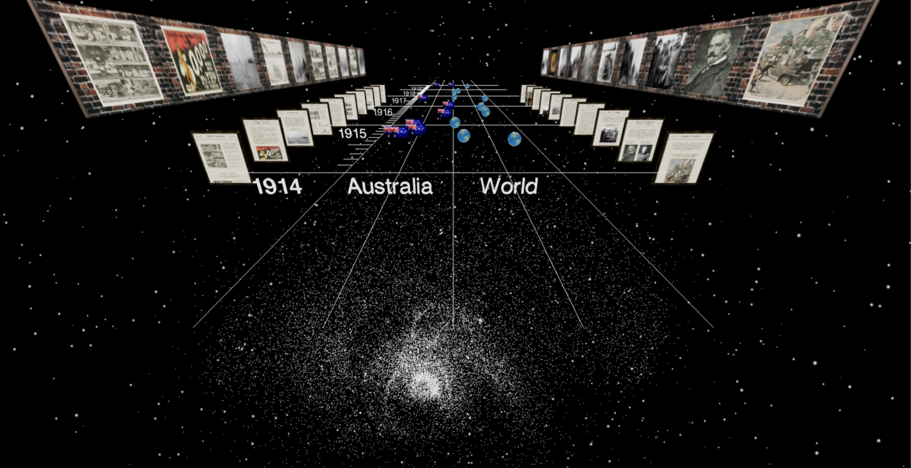
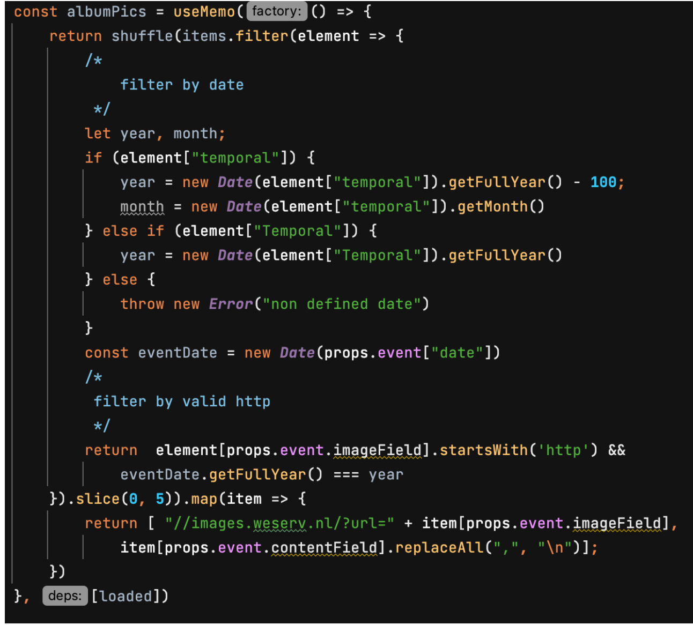

Final Product Documentation
Designed 3D overall aesthetics
The space background consists of three layers. The basic layer in the background is simply styled 3D canvas in deep blue to assemble the aura of the universe. The second layer uses the built-in component ‘Star’ which renders stars fading in and out around the 3D scene to enhance its dynamic. The last layer is an imported Galaxy Model in GLTF format, and all these three layers successfully assemble a galaxy in space.
The Picture frame forms the first part of poster geometry, and is implemented by importing a 3D model of picture with frame. The poster geometry was configured to have same size as the photo in this picture frame and was positioned slightly in front of the frame.
To enhance the aesthetic of Thumbnail Gallery, a brick wall was introduced into the 3D scene. This was implemented as Box Geometries mapped with brick texture that has a small width to make it resemble a real wall.
Fetching and Displaying data from dataset
In terms of the component that does the query, ever since we have adopted the Html implementation, we have moved the query calls into every single Album component. This allows us to manually set the content field and image field with each event Json such that each event can query a different dataset to fetch some data that is most suitable from the topic.
Due to the poor quality of the dataset, we have to manually filter the dataset to compensate. The filtering strategy is demonstrated as follow:
In the Zoomed state(first click any mark around the timeline or any thumbnail on the wall, then click at the Poster Geometry that camera brings you to), besides the fully detailed Poster, there will be Html element illustrated in the previous section. The content of this small inner page is purely from dataset where the above image is fetched from queensland soldier dataset if the event is relevant to War or Battle, newspaper dataset otherwise. The underneath text description conforms to the text description came with the dataset record. There will be at most 5 records per event album and using click to switch.
Runtime Image Cropping
The second part of Poster Geometry is a Plane Geometry that maps Poster image as texture. Since the size of the Model was required to be fixed for both implementation and aesthetics, runtime image cropping is used to simplify resizing the posters of various sizes. All Poster images are cropped to the size of 1400 * 1800 pixels, which are then used as textures to create new Plane Geometries as the content covers of the Poster Geometries. During the cropping process original length of posters are also saved, which is used to configure the full-length poster geometry at runtime.
Reverse Proxy
There is a serious issue with the dataset is the URLs of the image are all in HTTP format without SSL while the UQ server comes with HTTPS. The security check automatically blocks the display of the image content. The only approach to remedy is to transform the URL through a reverse proxy. Thankfully, Images.weserv.nl provides a cloud service helping cache the images. Trivially wrapping the HTTP URL in the given proxy then the image address in HTTPS version will return.